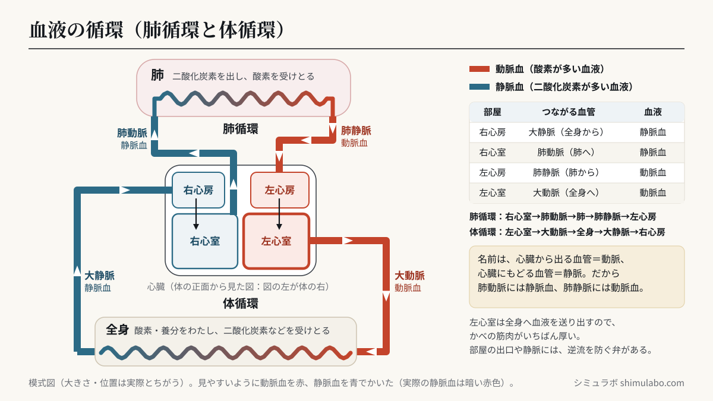
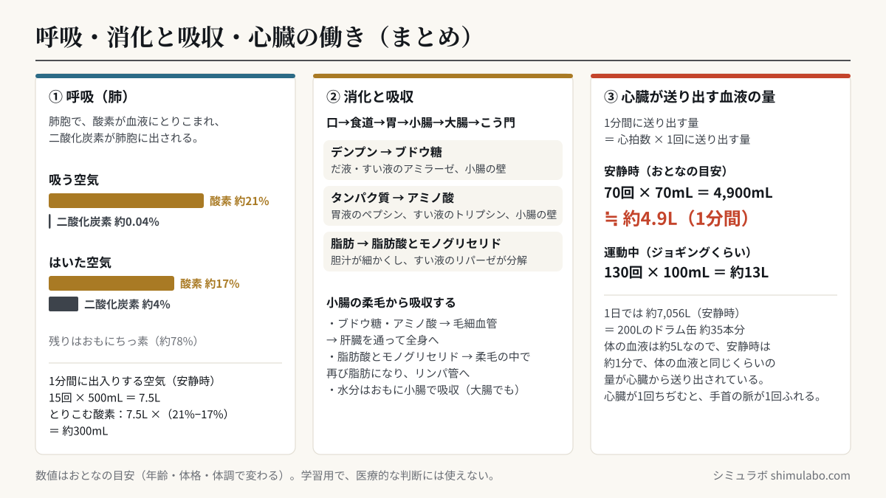

このシミュレーションでわかること
小学校6年の理科「人の体のつくりと働き」（学習指導要領 第6学年 B（1））と、中学校2年の理科「動物の体のつくりと働き」（第2分野（3）ア（ｳ）の「生命を維持する働き」）で学ぶ内容です。小学校の学習指導要領解説（理科編 p.86）には、人や動物の体のつくりや働きを調べるときに「映像や模型，図書，コンピュータシミュレーションなどを活用」することが書かれています。
画面は3つです。①血液の循環では、心拍数と1回に送り出す血液の量から、心臓が1分間に送り出す血液の量を計算します。②呼吸では、肺の中の肺胞で酸素と二酸化炭素が入れかわるようすを、③消化と吸収では、食べ物が口から小腸へ進むあいだに消化され、柔毛から吸収されるようすを見られます。「ことば」で、小6向けと中2向けの言い方を切りかえられます（例：「酸素が多い血液」⇔「動脈血」、「だ液」⇔「アミラーゼ」）。
授業での使い方
- 導入：自分の脈拍を15秒数えて4倍し、1分間の脈拍を求めます。①の画面で心拍数を同じ値にして、「心臓が1回ちぢむと、手首の脈が1回ふれる」ことを確かめます。
- 展開：①で血液の色が変わる場所（肺と全身の毛細血管）に注目させ、酸素と二酸化炭素がどこで入れかわるかを考えます。②は気体検知管で吸う空気とはいた空気を調べる実験の前後に、③はだ液でデンプンの変化を調べる実験（ヨウ素液）の前後に使えます。心臓の部屋・血管・臓器をタップすると、名前と働きが表示されます。
- まとめ：3つの画面を行き来して、呼吸・消化・血液の循環・排出に関わる臓器が、たがいに関わり合って生命を維持していることを整理します。画面のアドレスの最後に
#kokyu（呼吸）や#shoka（消化と吸収）を付けると、その画面から始まります。
児童・生徒への問いの例：
- 肺から心臓にもどる血液と、全身から心臓にもどる血液では、何がちがうでしょう。（中2：肺動脈と肺静脈には、それぞれ動脈血・静脈血のどちらが流れているでしょう。）
- 運動すると脈拍が増えるのはなぜでしょう。「1分間に送り出す血液の量」を使って説明しましょう。
- ごはんをよくかんでいると甘く感じるのはなぜでしょう。だ液は、でんぷんにどんな変化を起こすでしょう。
しくみ・解説






図はタップすると大きく表示されます。授業のプリント・スライド・板書計画に自由に使えます（出典「シミュラボ」とページのURLを添えてください）。
血液の循環（肺循環と体循環）
心臓は筋肉でできたポンプで、中は4つの部屋（右心房・右心室・左心房・左心室）に分かれています。図は体の正面から見た向きなので、図の左側が体の右側です。
| 心臓の部屋 | つながる血管 | 流れる血液 |
|---|---|---|
| 右心房 | 大静脈（全身から） | 静脈血（二酸化炭素が多い） |
| 右心室 | 肺動脈（肺へ） | 静脈血 |
| 左心房 | 肺静脈（肺から） | 動脈血（酸素が多い） |
| 左心室 | 大動脈（全身へ） | 動脈血 |
- 肺循環：右心室 → 肺動脈 → 肺の毛細血管（二酸化炭素を出し、酸素を受けとる）→ 肺静脈 → 左心房
- 体循環：左心室 → 大動脈 → 全身の毛細血管（酸素や養分をわたし、二酸化炭素などを受けとる）→ 大静脈 → 右心房
心臓の部屋の出口や静脈には弁があり、血液が逆にもどらないようにしています。全身に血液を送り出す左心室は、かべの筋肉がいちばん厚くなっています。
1分間に送り出す血液の量の計算
例：70回 × 70mL ＝ 4,900mL ≒ 約4.9L
1日では 4.9L × 60 × 24 ＝ 約7,056L（200Lのドラム缶 約35本分）になります。1日の拍動の回数は 70 × 60 × 24 ＝ 約100,800回です。おとなの体の血液は約5L（体重の約13分の1）なので、安静時は約1分で、体の血液と同じくらいの量が心臓から送り出されている計算になります。
| 体のようす | 心拍数（1分間） | 1回に送り出す量 | 1分間に送り出す量 |
|---|---|---|---|
| 安静にしているとき（おとなの目安） | 約70回 | 約70mL | 約4.9L |
| 運動中（ジョギングくらいの目安） | 約130回 | 約100mL | 約13L |
運動すると、筋肉がたくさんの酸素と養分を使うので、心拍数も1回に送り出す量も増え、1分間に送り出す血液の量は数倍になります。子どもは体が小さいぶん1回に送り出す量が少なく、心拍数はおとなより多めです。これらの数値は目安で、年齢・体格・体調によって変わります。このシミュレーションは学習用で、医療的な判断に使うものではありません。自分の脈拍の目安は脈拍・心拍数 平均チェックでも確かめられます。
呼吸（肺胞での気体の交換）
| 気体（体積の割合） | 吸う空気 | はいた空気 |
|---|---|---|
| 酸素 | 約21% | 約17% |
| 二酸化炭素 | 約0.04% | 約4% |
残りはおもにちっ素（約78%）で、ほとんど変わりません。肺の中には、気管支の先に肺胞という小さなふくろが数億個あり、まわりを毛細血管がとりまいています。肺胞の中の空気から酸素が血液にとけこみ、血液中の二酸化炭素が肺胞の中に出されます。肺胞がたくさんあることで、空気にふれる表面積が大きくなり、気体の交換が効率よく行われます。肺には筋肉がないので、中学校では横隔膜やろっ骨の間の筋肉の動きで肺がふくらんだりちぢんだりすることも学びます。
取り入れる酸素の量（目安）＝ 7.5L × （21% − 17%）＝ 約300mL
安静時のおとなの呼吸数は1分間に12〜20回ほど、1回の呼吸で出入りする空気は約500mLが目安です。運動中は呼吸数も1回の量も増え、30回 × 1,500mL なら1分間に45Lになります。取り入れられた酸素は、血液によって全身の細胞に運ばれ、養分からエネルギーを取り出すのに使われます。
消化と吸収（消化酵素の働き）
食べ物は、口 → 食道 → 胃 → 小腸 → 大腸 → こう門（肛門）と進みます。この1本の管を消化管といいます。消化液にふくまれる消化酵素が、養分を小さな物に分解して、小腸から吸収されやすくします。
| 消化液 | 出すところ | 消化酵素 | 分解するもの → できるもの |
|---|---|---|---|
| だ液 | だ液せん | アミラーゼ | デンプン → 麦芽糖など |
| 胃液 | 胃 | ペプシン | タンパク質 → 小さく分解 |
| 胆汁 | 肝臓（胆のうにためる） | ふくまない | 脂肪を細かい粒にして、分解を助ける |
| すい液 | すい臓 | アミラーゼ | デンプン → 麦芽糖など |
| すい液 | すい臓 | トリプシン | タンパク質 → さらに小さく分解 |
| すい液 | すい臓 | リパーゼ | 脂肪 → 脂肪酸とモノグリセリド |
| 小腸の壁の消化酵素 | 小腸 | いくつかの消化酵素 | 麦芽糖など → ブドウ糖／分解されたタンパク質 → アミノ酸 |
- ブドウ糖とアミノ酸：小腸の柔毛（じゅう毛）の毛細血管に入り、肝臓を通って全身へ運ばれます。
- 脂肪酸とモノグリセリド：柔毛に吸収されたあと再び脂肪になり、リンパ管に入って、やがて血液に合流します。
- 水分はおもに小腸で吸収され、大腸でも吸収されます。吸収されなかった物は、便としてこう門から出されます。
小6の言葉の画面では、消化酵素の名前は出さずに「だ液」「胃液」などの消化液で表し、でんぷんからできる物を「糖」と表しています。だ液の実験では、ヨウ素液はでんぷんがあると青むらさき色になります。だ液を入れて体温くらい（約40℃）にあたためたでんぷんの液では、ヨウ素液を加えても色が変わらず、でんぷんが別の物に変わったことがわかります。小腸の内側にはたくさんのひだがあり、その表面は柔毛という小さな出っぱりでおおわれているので、養分を吸収する表面積がとても大きくなっています（小腸の長さは、のばすと約6m）。
このシミュレーションで単純にしていること
- 心臓と血管は模式図です。肺の毛細血管はまとめて1つの箱で、全身の毛細血管は「脳・うで」「小腸 → 肝臓」「腎臓」「あし」の4つの通り道で表しています。
- 見やすくするため、酸素が多い血液を赤、二酸化炭素が多い血液を青で表しています。実際の静脈血は暗い赤色です。
- 心臓が打つ速さ（心拍数）は実際と同じですが、血液が流れる速さは見やすいように速くしています（実際は約1分で体をひとめぐりします）。
- ③の消化と吸収は、場所ごとにかかる時間を実際より大きく縮めています。実際には、胃に2〜4時間ほどとどまり、食べてから便になって出るまでには24〜72時間ほどかかるといわれ、個人差が大きいです。「吸収された養分」の％は、このモデルの中での目安です。
- 数値はおとなの目安です。医療的な判断には使えません。
参考
- 文部科学省「小学校学習指導要領（平成29年告示）解説 理科編」第6学年 B（1）人の体のつくりと働き（pp.85〜86）（文部科学省 小学校学習指導要領解説のページ）
- 文部科学省「中学校学習指導要領（平成29年告示）解説 理科編」第2分野（3）ア（ｳ）動物の体のつくりと働き（pp.89〜90）（文部科学省 中学校学習指導要領解説のページ）
- 小学校理科の教科書（東京書籍「新しい理科」、啓林館「わくわく理科」、大日本図書「たのしい理科」など）6年「人の体のつくりと働き」
- 中学校理科の教科書（東京書籍「新しい科学」、啓林館「未来へひろがるサイエンス」、大日本図書「理科の世界」など）2年「動物の体のつくりと働き」
- 教育出版 小学校理科のウェブ資料「消化の仕組み」（教育出版のページ）
引用・転載について
本ページのシミュレーション結果・数値は、出典を明記いただければブログ・ニュース記事・SNS・授業や社内資料への引用を歓迎します。事前連絡は不要です。
出典：シミュラボ「人の体のつくりと働き（血液の循環・呼吸・消化）」 https://shimulabo.com/sims/hito-karada/よくある質問
- 肺循環と体循環のちがいは何ですか？
- 肺循環は、右心室 → 肺動脈 → 肺 → 肺静脈 → 左心房 と流れ、肺で二酸化炭素を出して酸素を受けとる流れです。体循環は、左心室 → 大動脈 → 全身 → 大静脈 → 右心房 と流れ、全身の細胞に酸素や養分をわたし、二酸化炭素などを受けとる流れです。
- 動脈血と静脈血のちがいは何ですか？ 肺動脈に流れているのはどちらですか？
- 動脈血は酸素を多くふくむ血液（あざやかな赤色）、静脈血は二酸化炭素を多くふくむ血液（暗い赤色）です。肺動脈は心臓から肺へ向かう血管なので「動脈」ですが、全身からもどった静脈血が流れています。反対に、肺静脈には動脈血が流れています。
- 心臓は1分間にどれくらいの血液を送り出していますか？
- 安静にしているおとなでは、心拍数が1分間に約70回、1回に送り出す量が約70mLなので、70×70＝4,900mLで、約5Lです。運動するとどちらも増え、1分間に十数Lになることもあります。数値は目安で、年齢や体格によって変わります。
- 消化酵素にはどんなものがありますか？
- だ液のアミラーゼ（デンプン → 麦芽糖など）、胃液のペプシン（タンパク質を分解）、すい液のアミラーゼ・トリプシン・リパーゼ（リパーゼは脂肪 → 脂肪酸とモノグリセリド）、小腸の壁の消化酵素（→ ブドウ糖・アミノ酸）などがあります。胆汁は消化酵素をふくみませんが、脂肪を細かい粒にして消化を助けます。
- 吸う空気とはいた空気では、何がちがいますか？
- 体積の割合で、酸素は吸う空気で約21%、はいた空気で約17%に減り、二酸化炭素は吸う空気で約0.04%、はいた空気で約4%に増えます。肺の肺胞で、酸素が血液に取り入れられ、二酸化炭素が出されるためです。
- 小腸の柔毛（じゅう毛）には、どんな働きがありますか？
- 小腸の内側のひだをおおう小さな出っぱりで、養分にふれる表面積を大きくして、効率よく吸収します。ブドウ糖とアミノ酸は柔毛の毛細血管に入って肝臓へ運ばれ、脂肪酸とモノグリセリドは柔毛の中で再び脂肪になってリンパ管に入ります。